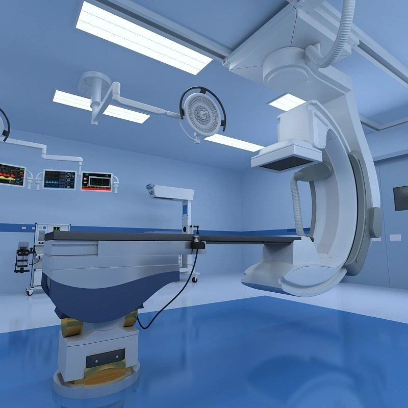

MESC
Know About MESC
Learn about our journey, core values, and dedication to delivering top-tier healthcare infrastructure.
The onsite team is dedicated to understanding the unique business context, providing invaluable domain inputs, while the offshore component accelerates project execution and maximizes cost-effectiveness. Within our network of professionals, expertise spans a wide spectrum, encompassing Hospital conceptualization, Project Management, Engineering design, Medical Equipment Planning, and the meticulous Design and Build of critical care and surgical areas.
Mariam Engineering Services and Consultants (MESC) has firmly established itself as a leading consulting firm in South India since its inception in 2019, with an unwavering commitment to delivering top-notch Health Care services. Specializing in Healthcare Engineering, Design, Construction, Project Management, and Commissioning of Healthcare facilities, MESC operates as a holistic service provider, guiding projects seamlessly from the initial design phase to the ultimate delivery of fully operational facilities.
MESC also offers a comprehensive suite of services tailored to healthcare facilities, including hospital air conditioning and ventilation systems meeting healthcare standards, ELV and IT systems, operation theatre design and optimization, and turnkey project management. Their expertise ensures optimal functionality, regulatory compliance, and safety in healthcare environments.
Our geographical footprint extends across various South Indian states, including Andhra Pradesh, Tamil Nadu, Kerala, and Karnataka. To ensure a dynamic and efficient approach, MESC employs a strategic blend of onsite and offshore components. MESC emerges as an industry expert, boasting an impressive 17 years of experience in the intricate field of healthcare infrastructure development.
Designing better.
Delivering excellence.
At the core of MESC's philosophy is a symbiotic approach where design and project management collaborate seamlessly, each complementing the other. MESC employs a unique and intricate mechanism that fine-tunes our work through a meticulous process involving comprehensive designing, coordination, and implementation.
Our commitment extends beyond the traditional boundaries as we actively contribute to the operational flow, user training, and a dynamic design forum where project management and the design department engage in a continuous exchange of insights, fostering an environment of innovation and improvement. This collaborative spirit is the driving force behind MESC's ability to consistently deliver excellence in healthcare infrastructure development.
Collaborative
Approach
Design and project management working as one.
End-to-End
Excellence
From concept to implementation and beyond.
Innovation
Driven
Continuous improvement through shared insights.
Operational
Commitment
Supporting operations, training and long-term success.
Leadership
The people behind MESC
Four backgrounds — healthcare strategy, clinical operations, engineering delivery and nursing coordination — sit on the same table, so a hospital project gets planned as one system rather than a set of separate drawings.

Dr. Umapathy Panyala
Director — Strategic Advisor
MESC is privileged to welcome Dr. Umapathy Panyala as Director – Strategic Advisor, bringing more than three decades of healthcare leadership, hospital planning, development, strategy, operations and transformation experience across India and international markets. His career spans the full lifecycle of a healthcare institution, from concept development and master planning through clinical strategy, execution, commissioning and organisational transformation.
He has been closely associated with some of the more significant developments in the Indian healthcare sector, and is particularly recognised for his role in establishing and expanding Apollo Hospitals across the Karnataka region — where his planning expertise and understanding of hospital operations helped shape the organisation's growth. That experience extends beyond individual projects to a broader view of how healthcare institutions are conceived, developed, commissioned, operated and continuously improved.
Areas of expertise
- Healthcare strategy & institutional development
- Hospital master planning & concept development
- Clinical planning & service-line strategy
- Hospital feasibility & commissioning readiness
- Organizational transformation & performance improvement
What he brings to MESC
Dr. Umapathy provides strategic leadership and mentorship across MESC's healthcare consulting, hospital planning, project development, commissioning and transformation work. His involvement pushes the team to look at every project from a complete healthcare-ecosystem view — clinical requirements, patient experience, operational efficiency, infrastructure, technology, quality, safety and long-term sustainability considered together — so clients can make informed decisions at every stage, from first vision through to operational readiness.
"Building healthcare institutions with the right vision, strategy, infrastructure and operational excellence."

Dr. Radhika Radhakrishnan
Chief Executive Officer
Dr. Radhika Radhakrishnan is CEO of MESC and shapes the company's healthcare consulting, clinical planning, hospital development and strategic growth. Her background spans clinical administration, hospital operations and institutional development, including leadership roles with healthcare organisations such as Hycare Superspecialty Hospital — experience that lets her connect clinical requirements with infrastructure, engineering, operations and business strategy rather than treating them as separate conversations.
Her starting point is that a hospital is a living clinical and operational ecosystem, not simply a building: clinical requirements shape patient pathways, which shape department planning, infrastructure, medical technology, staffing, policy and, ultimately, the patient's experience. That thread runs through MESC's healthcare projects from early concept and clinical planning through design coordination, execution, commissioning and operational readiness.
Where she's hands-on
- Clinical department & patient-pathway planning
- OPD, IPD, ICU, OT & emergency workflows
- Hospital policy, governance & clinical protocols
- Project leadership from concept through commissioning
- Business development & client relationships
As CEO she also leads MESC's healthcare business development, client relationships and market positioning — representing the firm at industry forums and translating between hospital owners, doctors, investors and project teams, alongside the day-to-day work of hospital policy and clinical governance.
"Our responsibility is not only to build hospitals, but to create healthcare environments where people, processes, technology and infrastructure come together to deliver better patient care."

Md. Naviduddin
Technical Director — Healthcare Engineering & Projects
Md. Naviduddin leads MESC's technical, engineering, procurement and turnkey delivery work. His experience across healthcare MEP systems, hospital interiors, procurement and commissioning gives him a practical way of turning clinical requirements and architectural intent into facilities that are technically coordinated, cost-effective and actually buildable — not just drawings that look good on paper.
On the engineering side, that means HVAC and medical gas systems, electrical and fire & life-safety infrastructure, ELV and ICT systems, and the critical power and communication backbones a hospital depends on — planned for reliability and maintainability, not just installation day. On the interiors side, it means modular joinery, healthcare-grade finishes and infection-control-conscious detailing across OT, ICU, OPD and diagnostic areas, coordinated closely with architects and clinical planners.
Where he's hands-on
- MEP, HVAC & medical gas systems
- Hospital interiors & critical-care fit-outs
- Procurement, BOQs & vendor management
- PMC & turnkey project execution
- Testing, commissioning & handover
He runs projects through a fairly disciplined sequence — planning, design coordination, procurement, mobilisation, execution, testing and commissioning, then handover — and holds cost, quality, programme and technical performance in balance across the whole run, rather than trading one off against the others late in the project.
"Plan accurately. Coordinate continuously. Execute systematically. Deliver responsibly."

Mrs. Sindhu Naveed
Managing Director — Nursing & Healthcare Coordination
Mrs. Sindhu Naveed is Managing Director of MESC and brings a nursing and patient-care perspective into a firm otherwise built around engineering and project delivery. Her work in nursing coordination, staff training, documentation and quality systems keeps the practical requirements of nurses and patients in the room from early planning onward, not added in afterwards.
Nurses are among the heaviest users of hospital infrastructure, and their workflow shapes patient safety, response times, medication management and infection control more than most floor plans account for. She works with clinical teams on nursing-station requirements, ward and ICU operational needs and nursing-related SOPs, and separately coordinates staff training — orientation, patient-care protocols, documentation practice and emergency response — so teams know not just what to do but how to document and monitor it consistently.
Where she's hands-on
- Nursing & ward/ICU workflow coordination
- Staff training & capacity building
- NABH / JCI-oriented documentation
- Accreditation readiness
- Hospital operational support
A meaningful part of her role is documentation aligned with NABH and JCI frameworks — policies, SOPs, protocols and audit formats built to be actually used on the floor rather than written only to satisfy an accreditation visit, which is what makes quality and patient safety something a hospital does daily rather than something it performs occasionally.
"Quality healthcare begins with well-designed systems, trained people, consistent processes and a culture of patient-centred care."
Let’s build healthcare infrastructure that performs.
Talk to the MESC team about planning, engineering, MEP, MGPS, clean-rooms and turnkey delivery.